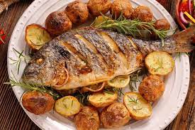
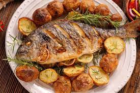
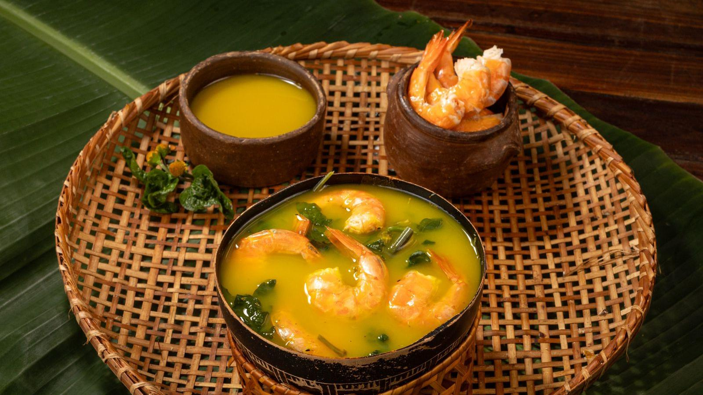

Tambaqui de assado na brasa!
O mais pedido
Tambaqui é um dos peixes mais deliosos da culinária amazonense, e olha que tem muitos!
Tambaqui Assado
Tambaqui é um dos peixes mais deliosos da culinária amazonense, e olha que tem muitos!
Tambaqui Assado
Típico da região norte, aqui temos o melhor tacacá da região!!
